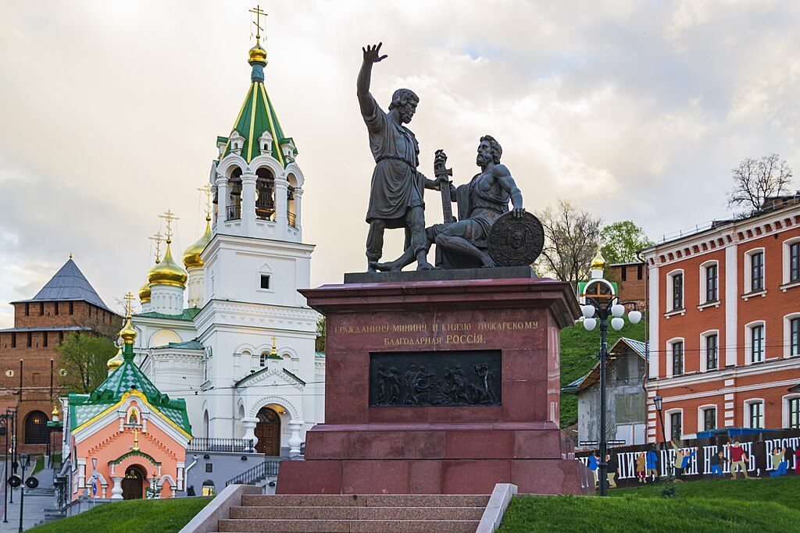

Памятник Минину и Пожарскому

Историческая справка
Памятник Кузьме Минину и Дмитрию Пожарскому — монумент, посвященный руководителям Второго народного ополчения 1612 года.
История создания
Памятник был установлен в 2005 году в честь празднования 500-летия Нижнего Новгорода.
Характеристики
- Высота: 8.5 метров
- Материал: бронза
- Постамент: гранит
- Вес: около 20 тонн
Интересные факты
- Первый памятник, установленный в России в честь народных героев
- На создание памятника ушло 2 года
- Расположен рядом с Нижегородским кремлем